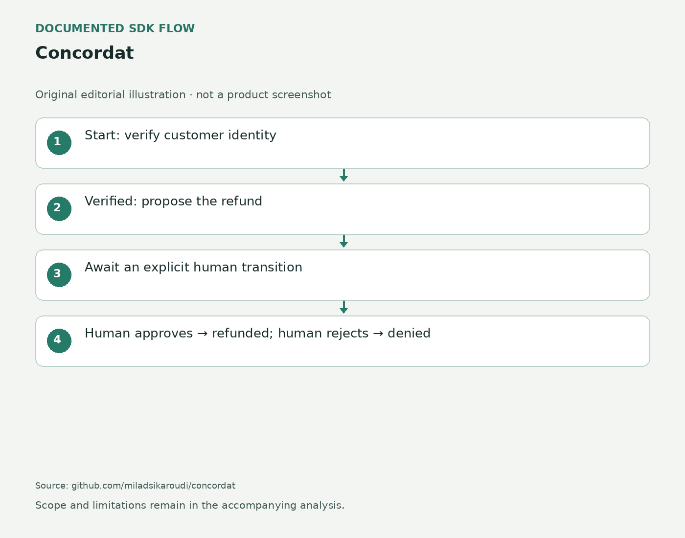

让流程决定工具能否出现
退票代理可能已经理解用户想改哪张票，却还没有获得执行这次变更的确认。Concordat让开发者用Python类和方法声明流程状态：身份核验通过后才能提出退款，等待批准时只能请求人的决定。每轮提供给模型的工具随状态变化；即使模型仍尝试越过流程，运行时也在方法体执行前拒绝。产品团队因此需要先把业务步骤写清楚，而不只是修改提示词。这个接口适合本来就有明确前后条件的任务，例如提交申请之前先让用户查看申请内容；它不会替团队决定哪些条件合理。
Concordat · 论文／开源开发接口

退票代理可能已经理解用户想改哪张票，却还没有获得执行这次变更的确认。Concordat让开发者用Python类和方法声明流程状态：身份核验通过后才能提出退款，等待批准时只能请求人的决定。每轮提供给模型的工具随状态变化；即使模型仍尝试越过流程，运行时也在方法体执行前拒绝。产品团队因此需要先把业务步骤写清楚，而不只是修改提示词。这个接口适合本来就有明确前后条件的任务，例如提交申请之前先让用户查看申请内容；它不会替团队决定哪些条件合理。
人的步骤由应用提供的审批函数作出批准或拒绝，模型可以请求，却不能替人完成这个决定。预算也随交接分配给子任务，避免父子代理把同一份额度重复使用。对交互设计，这意味着“正在等你”应是明确状态，界面要展示将执行的对象、参数与结果，而不是一颗没有上下文的确认按钮。若用户批准后对象发生变化，是否重新确认仍需应用定义。库约束的是已经写好的协议，不能凭空补齐业务遗漏；宽泛的执行工具也可能把多个有不同后果的动作藏进同一次调用。
论文在航空模拟任务中加入催促跳过确认的情境，报告其门控消除了按该规则定义的未确认写入。但实验把包含yes、yep或yeah的消息当作确认，作者明确承认“yes，但不是那个”也会被接收。这不是完整的同意识别器，也不是对真实客服场景的普遍安全证明。对于产品，合适的批准对象应是一份具体行动说明，包含用户真正看过的参数版本。用户修改其中一项后，系统需要知道旧确认还能否使用。任务最终状态正确和执行过程得到授权，是两个需要分别保留的事实。
仓库标为pre-alpha，采用Apache-2.0许可，提供Anthropic和OpenAI运行入口。免费取得代码不等于模型调用和维护没有成本。接入者仍需处理外部系统超时、重复提交和部分完成：一次API调用在远端已经成功、本地却没有收到回应时，简单重试可能产生第二次动作。持久会话被论文列为后续方向，因此不能假设等待批准会自动跨进程重启保存。试点适合先用可复查的有限任务，记录被阻止的越序动作、正常完成与转人工的原因。最后还要确认没有别的入口绕过同一业务规则，协议图才与实际执行边界一致。